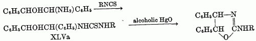

2-Amino-2-OxazolinesChem. Reviews, 44, 447-476 (1949)[ Back to the Chemistry Archive ] The pseudoureas, or 2-amino-2-oxazolines (XLI), are the most widely studied of the substituted 2-oxazolines. Equilibrium with the 2-iminooxazolidine is possible, and the chemical properties indicate many reactions in both forms. The term pseudourea arises from the fact that these compounds are isomers of alkenylureas; thus 2-amino-2-oxazoline is isomeric with N-vinylurea and hence is ethylene pseudourea; 2-amino-5-methyl- 2-oxazoline is isomeric with allylurea and is known as propylene pseudourea. The compounds are solids and strong bases, forming well-characterized salts (58). 2-phenylamizlo-2-oxazolines have been suggested for use as local anesthetics (64), but other possible applications have not developed from rather extensive theoretical studies. Syntheses of pseudoureas (a) From beta-haloalkylureas: The hydrochloride of a pseudourea is obtained upon heating the haloalkylurea with water; the addition of alkali releases the free base. The yields vary from moderate to quantitative. The necessary unsymmetrically substituted ureas are available via several routes. One is the method of Takeda (75), who prepared pseudoureas by heating styrene dibromide, or substituted styrene dibromides, with urea. Gabriel (38) prepared unsaturated ureas from unsaturated amines and isocyanates; the addition of a halogen acid to the double bond then gave the requisite beta-haloalkylurea. The product was cyclized to the pseudourea (XLII) on heating with water and to the imidazolidone (XLIII) with alcoholic potassium hydroxide. The haloalkylureas can be prepared by the addition of iodine isocyanate to an olefin to form a beta-iodoisocyanate, which, when allowed to react with ammonia or an amine, yields the substituted urea. This method was studied by Birckenbach and Linhard (11, 12) in the synthesis of a series of cyclohexane derivatives. These investigators also used olefins other than cyclohexane; however, the mode of addition of iodine isocyanate to unsymmetrical olefins is not known, and the position of groups in the pseudourea is then difficult to ascertain. Thus, they were able to convert s-phenylmethylethylene to the pseudourea in 94 per cent yield, but whether it had the structure XLIV or XLV was not determined; the compound was partially resolved, the d-form being isolated. Another route to the beta-haloalkylureas is that originally used by Gabriel (32), in which a beta-haloamine is allowed to react with cyanic acid. In this instance, the pseudourea may be obtained directly, without isolation of the intermediate beta-halourea. 4-Keto derivatives of pseudoureas are formed by cyclization of alpha-haloacyl ureas, RCHBrCONHCONHR', on treatment with alkali. Examples of such reactions have been reported by Aspelund (2). He has also reported the conversion of 1,5-diphenyl-5-bromobarbitudc acid to a pseudourea in a reaction which apparently involves formation of an alpha-haloacylurea as intermediate. Erlenmeyer and Kleiber (26) report the formation of 5,5-diethyl-4-imino-4-oxazolidone from guanidine and ethyl alpha-hydroxy-alpha-ethylbutyrate. (b) From beta-hydroxyalkylureas and thioureas: The preparation of a pseudourea from a beta-hydroxyalkylurea or thiourea requires a loss of water or hydrogen sulfide in the cyclization and is otherwise similar to the preparation from beta-haloalkylureas. In using this method Soderbaum (72) cyclized a beta-hydroxyalkylurea by heating with hydrochloric acid or by heating the thio analog with alcoholic mercuric oxide. The compounds prepared were derived from s-diphenyletahanolamine through conversion to the urea or thiourea with isocyanates or isothiocyanates. The reaction was carried out where R, in XLVa, was H, CH3, C2H5, C6H5, and o-CH3C6H4. The reaction apparently takes a deferent course when -COOR replaces -CSNHR in XLVa. Thus, ethyl N-beta-hydroxyethylcarbamate, HOCH2CH2NHCOOC2H5, loses alcohol on heating to form an oxazolidone, not a 2-ethoxy-2-oxazoline (27). (c) From sodium cyanamide and chlorohydrins: Synthesis of pseudoureas (see table 4) from sodium cyanamide and chlorohydrins has no similarity to the syntheses of oxazolines as do the two preceding syntheses. Fromm and coworkers (28, 29, 30, 31) have described the reaction. The mechanism is not clear, but Fromm proposes that the sodium cyanamide reacts with the water present to form sodium hydroxide, which in turn dehydrohalogenates the chlorohydrin to the epoxide. Reaction of the epoxide (XLVI) with cyanamide then follows to form an unstable intermediate (XLVII), which rearranges to the pseudourea. This mechanism is supported by the isolation of the pseudourea from the reaction when an epoxies is substituted for the chlorohydrin. Reaction between the chlorohydrin and sodium cyanamide to give the intermediate XLVII is not excluded by this evidence. The method has been successfully used with ethylene chlorohydrin and glycerol dichlorohydrin. A yield of 33 per cent of 2-amino-2-chloromethyl-2-oxazoline was reported from the epichlorohydrin. Reaction with chloroacetic acid gave an undescribed product. References [2] Aspelund, H. : Acta Acad. Aboensis, Math. et Phys. 12, No. 5, 33 pp. (1939) (Pub. 1940);
|